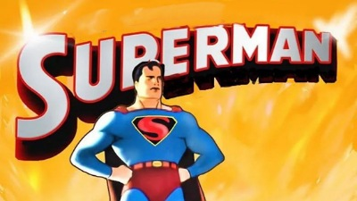

SUPERMAN 1941
Animação ‧ 10 min
AVALIAÇÃO: ⭐ 7,3/10
DESCRIÇÃO: Uma compilação de curta-metragens de animação das aventuras do Super-Homem produzidos nos anos 1940.
Direção:
Dave FleischerSteve Muffati
Roteiristas:
Jerry SiegelJoe ShusterSeymour Kneitel
Estrelas:
Bud CollyerJoan AlexanderJack Mercer